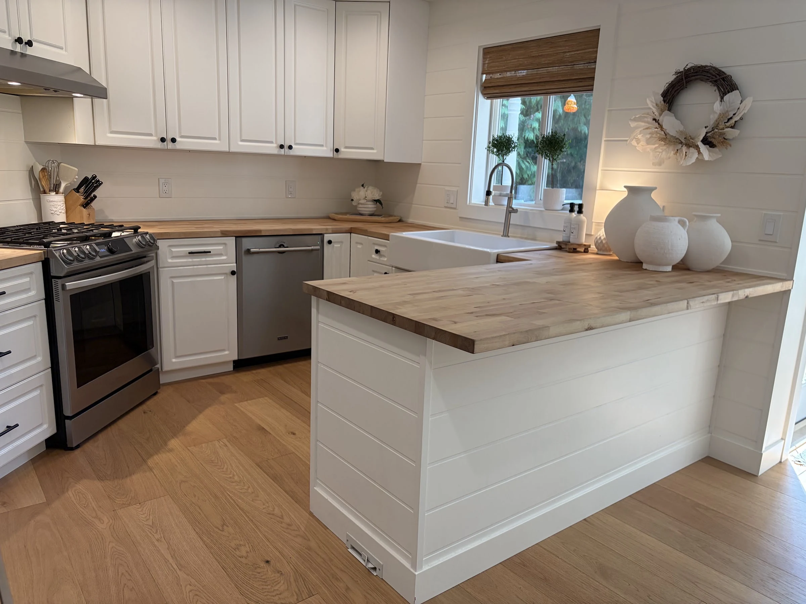
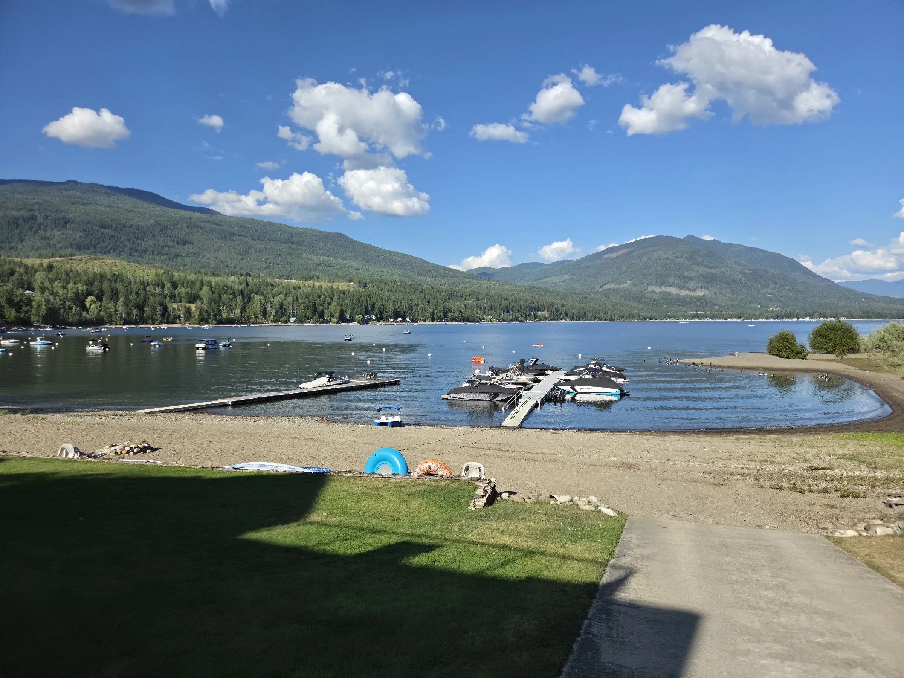
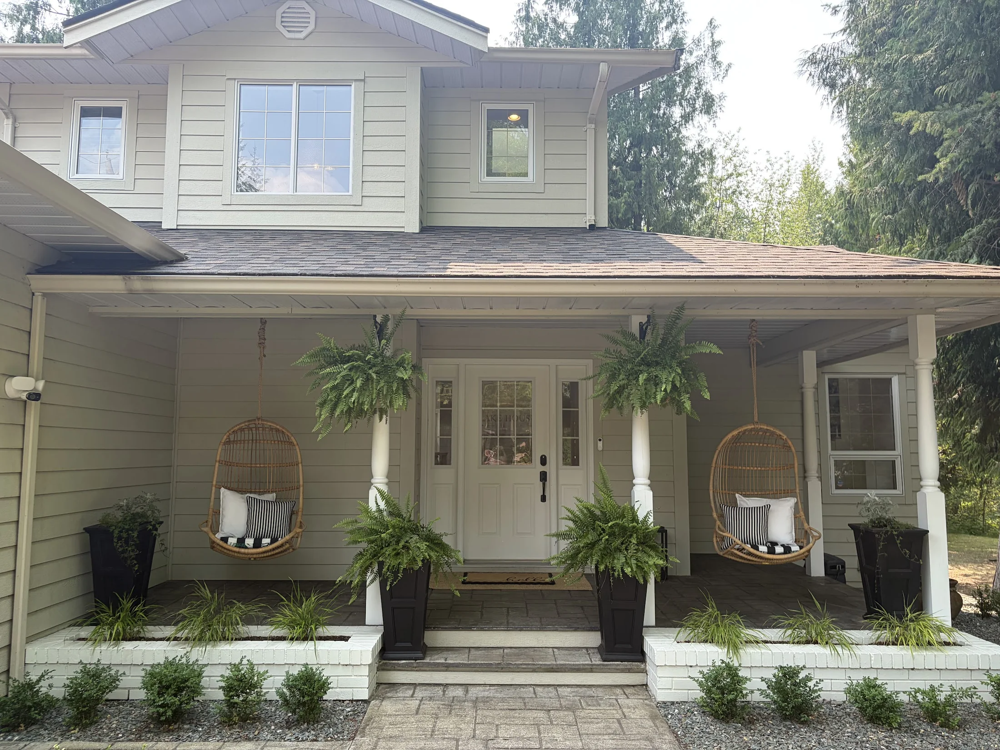
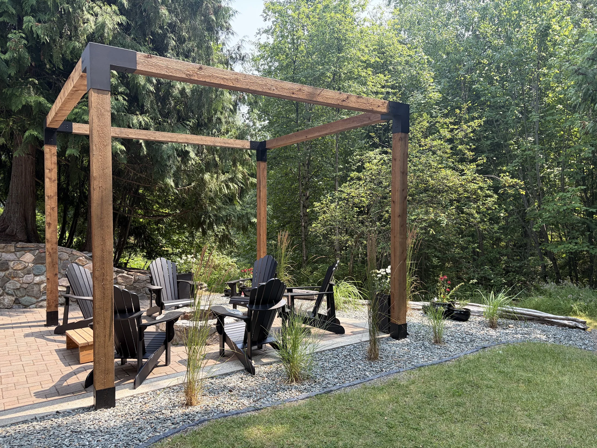
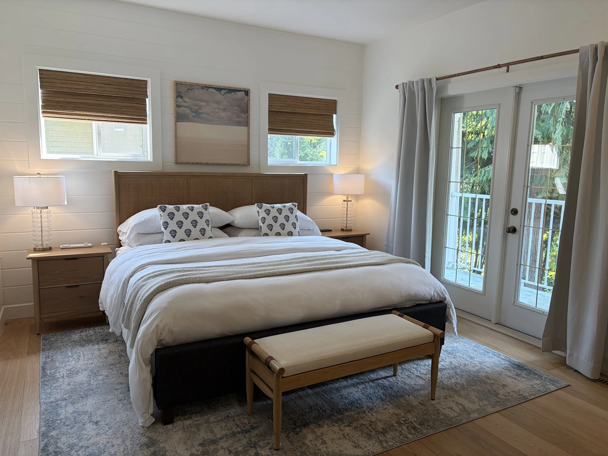
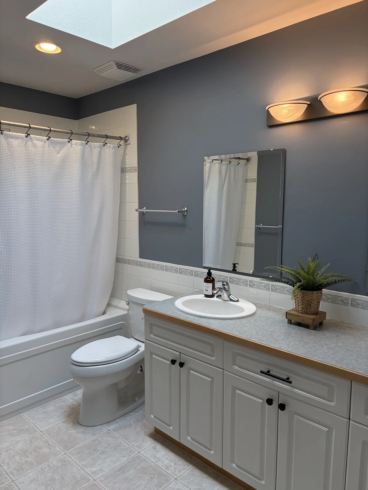
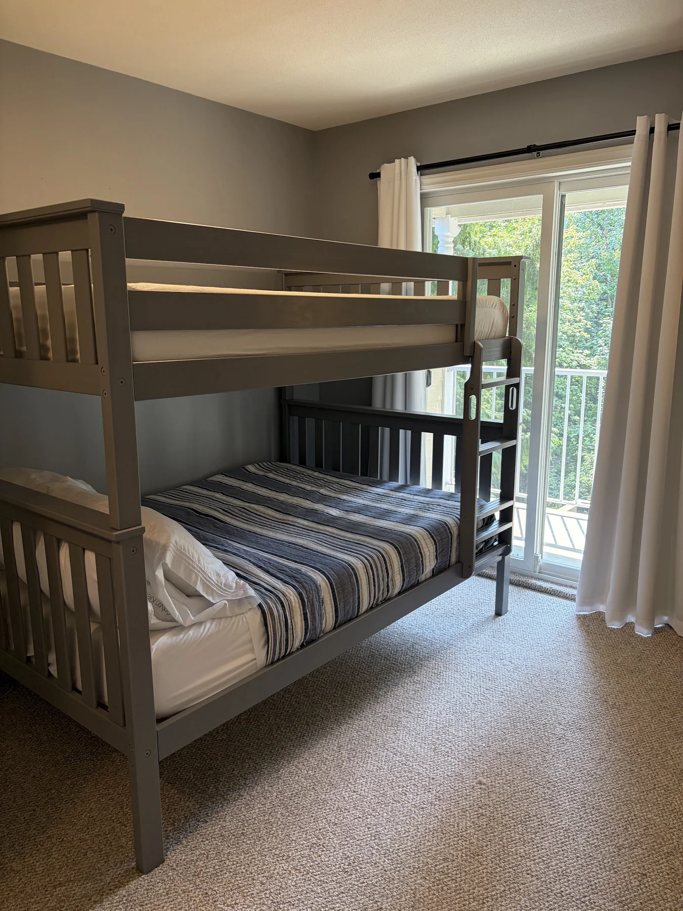

BLAKE POINT HOUSE · MAGNA BAY · SHUSWAP LAKE
STAY FOR THE
QUIET SEASON.
A furnished three-level home for a calm fall, winter and spring by Shuswap Lake.
03
INSIDE & OUT
THE COMPLETE JOURNAL LIVES ONLINE.






Eight representative privacy-cleared views are shown here. The website presents 34 distinct privacy-cleared views from the refreshed 130-image source album; near-duplicates are removed, while names, addresses and images of people are omitted or remediated.
04
FALL · WINTER · SPRING
A QUIET-SEASON BASE.
SEP—NOVFALLCooler trails, changing colour and the Adams River salmon season.
DEC—FEBWINTERA quieter lake, room to work and slow days at home.
MAR—MAYSPRINGWaterfalls build, trails reopen and the long light returns.
AROUND THE NORTH SHUSWAP
Ross Creek Country StoreGroceries · fuel · propane · Wi-Fi · laundry
North Shuswap Health CentreAppointment-based primary and allied care
Shuswap Lake Provincial ParkBeach · nature trail · year-round boat-launch access via Ashe Road
Evelyn Falls3 km round trip · check seasonal conditions
Tsútswecw Provincial ParkAdams River trails · salmon viewing in season
A GOOD FIT
- One quiet residential tenancy of 90 days or longer
- Ordinary remote work and day-to-day family life
- Approved occupants, vehicles and pets
- Respect for strata quiet hours and common property
NOT A FIT
- Parties, events or group-recreation staging
- Commercial or crew accommodation
- RV repair, trailering operations or fuel storage
- Unapproved disruptive property uses
START WITH A FIT CHECK.
PRIVATE CONTACT DETAILS SHARED WITH PREVIEW · www.blakepoint.ca/rental/
Dock, slip and amenity access are not promised unless confirmed in writing. Final tenancy terms use the BC RTB-1 plus a reviewed addendum.